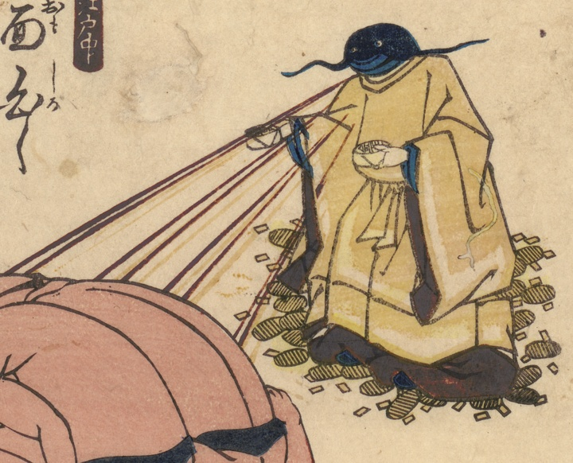

神官のような姿をした鯰。手に小判を持ち、足元にも散乱している。多数の人体を寄せ集めて描かれた男性に向かって光を射している。
著作者：不明／出典：親書誌：U426_nichibunken_0463：[面白くあつまる人が寄たかり]；オモシロクアツマルヒトガヨリタカリ／日付：2025／資源識別子：U426_nichibunken_0463_0001_0000
Copyright (c)2010- International Research Center for Japanese Studies, Kyoto, Japan. All rights reserved.